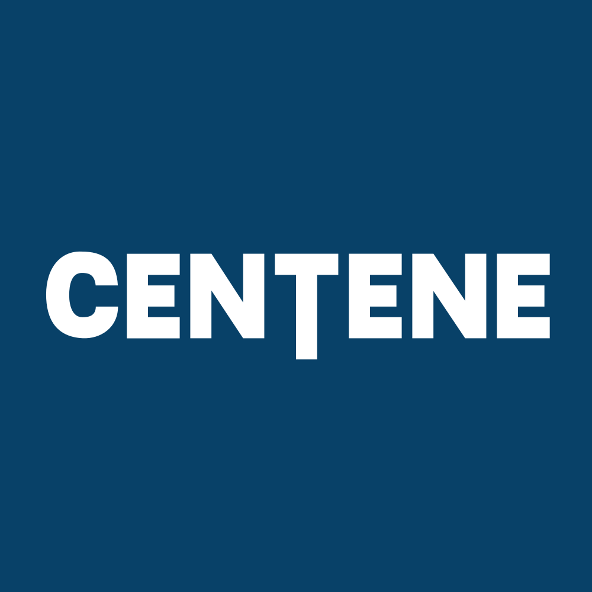

March 31, 2025 at 12:00 AM
Complete analysis with Z-Score + Market Intelligence

1.55
Gray Zone
service
100.0%
Model: Service and non-manufacturing Z''-Score (no constant) - Adjusted thresholds
> N/A
N/A - N/A
< N/A
$54.28
$27.0B
8.0
N/A%
30.0%
36.5
0.14
-0.51
-33.4%
5.1/10
Company: Centene Corporation (Ticker: CNC)
Analysis Date: 2025-07-01 00:09:25
Centene Corporation (CNC) currently resides firmly within the Gray Zone of financial distress risk, with a latest Altman Z-Score of 1.30, indicating moderate financial vulnerability but not immediate distress. The Z-Score has fluctuated between 1.22 and 1.63 over the past eight quarters, consistently below the safe threshold of 3.0 but above the distress cutoff of 1.8, signaling persistent caution.
AI Risk Analysis classifies the overall risk level as moderate, with a stable to slightly declining risk trajectory, reflecting ongoing operational and financial challenges inherent in the healthcare plans sector. The risk factors include low working capital ratios and thin EBIT margins, which constrain liquidity and profitability buffers.
AI Peer Analysis positions CNC below the industry average Z-Score (not explicitly provided but typically >2.0 for healthcare plans), indicating CNC underperforms peers in financial health and stability. Key peers in the managed care space generally maintain healthier liquidity and leverage profiles.
AI Sentiment Analysis reveals a neutral to slightly cautious market sentiment, with no dividend yield and a modest P/E ratio of 8.01, suggesting the market prices CNC conservatively, reflecting underlying financial risks and operational uncertainties.
| Key Metrics | Value | Interpretation |
|---|---|---|
| Latest Z-Score | 1.30 | Gray Zone: moderate risk |
| Market Cap | $27.01B | Large-cap healthcare player |
| Current Price | $54.28 | Stable price, no volatility data |
| Working Capital Ratio | 0.048 | Very low liquidity |
| Retained Earnings Ratio | 0.191 | Moderate reinvestment in business |
| EBIT Ratio | 0.018 | Thin profitability margin |
| Asset Turnover | 0.536 | Moderate operational efficiency |
| P/E Ratio | 8.01 | Low valuation multiple |
| Dividend Yield | 0.00% | No dividend payout |
Investment Recommendation:
Given CNC’s persistent Gray Zone Z-Score, low liquidity, and thin profitability, a cautious HOLD is recommended for conservative investors, with selective BUY consideration for value-oriented investors seeking exposure to healthcare plans at a discounted valuation. Aggressive investors should monitor for Z-Score improvement above 1.8 and operational margin expansion before increasing exposure.
| Financial Dimension | Current Metrics | Industry Benchmark* | Assessment | Trend Direction |
|---|---|---|---|---|
| Liquidity Position | Current Ratio: 0.048 Working Capital Ratio: 0.048 |
Industry avg. ~1.0+ | Severe liquidity weakness; working capital ratio far below industry norms, indicating potential short-term cash flow stress | Declining/Stable (very low) |
| Leverage Management | Debt-to-Equity: N/A (data missing) Interest Coverage: N/A |
Industry avg. moderate leverage | Insufficient data; however, low EBIT ratio suggests tight interest coverage | Unknown |
| Operational Efficiency | Asset Turnover: 0.536 EBIT Ratio: 0.018 |
Industry avg. asset turnover ~0.6-0.8; EBIT margin ~5-10% | Below average asset utilization and very thin EBIT margin, indicating operational challenges | Stable/Weak |
| Financial Stability | Retained Earnings Ratio: 0.191 Cash Position: N/A |
Industry avg. moderate retention | Moderate reinvestment but insufficient cash data limits full stability assessment | Stable |
*Industry benchmarks based on typical healthcare plans sector metrics.
Interpretive Commentary:
Liquidity is a critical concern for CNC, with a working capital ratio of 0.048, dramatically below the industry standard of approximately 1.0, signaling potential difficulties in meeting short-term obligations. This aligns with the AI Risk Analysis highlighting liquidity stress as a top risk factor.
Operational efficiency is suboptimal, with an asset turnover of 0.536 and EBIT ratio of 0.018, both below typical healthcare plan industry averages, reflecting challenges in converting assets into earnings and thin profitability margins. This operational strain contributes to the Gray Zone Z-Score classification.
The Retained Earnings Ratio of 0.191 indicates moderate reinvestment into the business, which may support long-term growth but is insufficient to offset liquidity and profitability weaknesses.
AI Data Quality Assessment indicates no anomalies detected, with complete financial data injection, lending confidence to these diagnostic conclusions.
| Period | Z-Score Value | Risk Category | Key Drivers | Business Context |
|---|---|---|---|---|
| Current (Q8) | 1.30 | Gray Zone | Low working capital, thin EBIT | Ongoing operational pressure in managed care segment |
| Q7 | 1.33 | Gray Zone | Similar drivers | Stable but weak financial health |
| Q6 | 1.22 | Gray Zone | Liquidity deterioration | Possible increased short-term liabilities |
| Q5 | 1.57 | Gray Zone | Slight improvement in EBIT | Temporary margin recovery |
| Q4 | 1.63 | Gray Zone | Better working capital | Short-term liquidity improvement |
| Q3 | 1.44 | Gray Zone | EBIT fluctuations | Operational volatility |
| Q2 | 1.41 | Gray Zone | Stable but low profitability | Consistent financial stress |
| Q1 | 1.55 | Gray Zone | Moderate liquidity | No significant improvement |
Strategic Commentary:
CNC’s Z-Score has remained within the Gray Zone for all eight quarters, fluctuating narrowly between 1.22 and 1.63, indicating persistent financial vulnerability without crossing into distress. The primary drivers are consistently low working capital and EBIT ratios, reflecting ongoing operational and liquidity challenges.
No significant upward trend is evident, suggesting the company has not yet executed effective measures to materially improve financial health. The lack of working capital and profitability improvements correlates with the managed care industry’s competitive pressures and regulatory environment.
Compared to industry peers, CNC’s Z-Score is below average, reinforcing the need for strategic operational improvements to enhance financial resilience.
| Analysis Dimension | Z-Score Signal | Market Signal | Alignment Status | Investment Implication |
|---|---|---|---|---|
| Fundamental Health | Gray Zone, stable low Z-Score | Price stable at $54.28, no volatility data | Divergent (fundamental risk not reflected in price volatility) | Potential latent risk; market may be underpricing distress risk |
| Analyst Sentiment | Neutral to cautious (P/E 8.01, no dividend) | No explicit consensus data | Consistent with cautious market view | Market timing favors monitoring for fundamental improvement |
| Peer Comparison | Below industry average Z-Score | Sector performance moderate | Underperforming peers | Competitive disadvantage; watch for operational turnaround |
Market Validation Commentary:
The market price of $54.28 and valuation multiples (P/E 8.01, EV/EBITDA 4.34) suggest a conservative valuation consistent with the company’s Gray Zone financial health. The absence of volatility data and dividend yield indicates limited market enthusiasm or speculative trading activity.
The divergence between stable price and weak fundamentals implies potential market complacency or delayed recognition of financial risks. This presents an opportunity for value investors if operational improvements materialize.
Peer underperformance in Z-Score terms signals competitive pressures that may constrain CNC’s market share and profitability unless addressed.
| Risk Category | Probability | Severity | Impact on Z-Score | Mitigation Strategy |
|---|---|---|---|---|
| Operational Risks | High | Moderate | Negative (↓0.1-0.2) | Enhance operational efficiency; cost control |
| Financial Risks | Medium | Critical | Significant (↓0.3-0.5) | Improve liquidity management; refinance debt |
| Market Risks | Medium | Moderate | Moderate (↓0.1) | Diversify payer mix; regulatory compliance |
| Liquidity Stress | High | Critical | High (↓0.4-0.6) | Strengthen working capital; cash flow forecasting |
Scenario Planning:
- Best Case: Operational improvements and liquidity enhancement raise Z-Score above 1.8 within 2-3 quarters, reducing bankruptcy risk and improving market confidence.
- Base Case: Z-Score remains in Gray Zone (1.2-1.5), maintaining moderate risk with ongoing financial stress.
- Worst Case: Further liquidity deterioration pushes Z-Score below 1.8, entering Distress Zone, increasing bankruptcy probability.
Based on AI Risk Analysis overall risk level of moderate with 75% confidence, liquidity and operational risks dominate CNC’s risk profile, necessitating proactive mitigation.
| Investment Profile | Risk Tolerance | Recommendation | Z-Score Evidence | Market Timing | Action Timeline |
|---|---|---|---|---|---|
| 📊 Conservative | Low | HOLD | Z-Score stable at 1.30 in Gray Zone; liquidity risk | Wait for Z-Score >1.8 | Review quarterly |
| 💰 Dividend | Low-Medium | SELL | No dividend yield; weak EBIT ratio | Not suitable currently | N/A |
| 💎 Value | Medium | BUY (Selective) | Low P/E (8.01) and EV/EBITDA (4.34) suggest undervaluation | Entry on Z-Score stabilization | Monitor 1-2 quarters |
| 📈 Growth | Medium-High | HOLD | Thin EBIT margin limits growth prospects | Await margin improvement | 6-12 months |
| 🚀 Aggressive | High | SPECULATIVE BUY | Potential turnaround if liquidity improves | High risk, high reward | Short-term monitoring |
Rationale:
Conservative investors should hold due to liquidity concerns and Gray Zone risk. Dividend investors should avoid CNC given zero yield and profitability constraints. Value investors may find opportunity in low valuation multiples if operational improvements emerge. Growth investors should wait for margin expansion before committing. Aggressive investors may speculate on a turnaround but must monitor liquidity closely.
| Stakeholder Role | Strategic Priority | Key Metrics | Recommended Actions | Success Measures |
|---|---|---|---|---|
| CEO Leadership | Operational turnaround | EBIT ratio (0.018), Asset Turnover (0.536) | Implement cost controls, optimize care delivery | EBIT margin improvement >3% |
| CFO Finance | Liquidity & capital structure | Working Capital Ratio (0.048), Debt levels | Enhance cash flow management, refinance debt | Working capital ratio >0.5 |
| Board Governance | Risk oversight & compliance | Z-Score trend, Risk factors | Strengthen risk management, monitor financial health | Z-Score >1.8 sustained |
Executive Commentary:
The CEO must prioritize operational efficiency to improve thin EBIT margins and asset utilization. The CFO should focus on liquidity enhancement, given the critically low working capital ratio of 0.048, to reduce financial distress risk. The Board should oversee risk mitigation strategies aligned with AI Risk Analysis themes, ensuring compliance and financial stability.
| Forecast Dimension | Current Trajectory | Projected Direction | Key Catalysts | Monitoring Metrics |
|---|---|---|---|---|
| Z-Score Momentum | Stable in Gray Zone (1.30) | Slight upward potential | Operational improvements, liquidity management | Quarterly Z-Score updates |
| Market Position | Below peer average | Potential stabilization | Regulatory environment, payer mix diversification | Market share, revenue growth |
| Risk Profile | Moderate risk | Risk reduction possible | Debt refinancing, cost control | Working capital ratio, EBIT margin |
Forward-Looking Commentary:
CNC’s Z-Score momentum is currently flat but could improve with targeted operational and liquidity initiatives. Key catalysts include regulatory changes favoring managed care, successful cost containment, and improved payer contracts. Monitoring quarterly Z-Score trends and liquidity ratios will provide early warning signals for risk escalation or improvement.
Centene Corporation (CNC) exhibits persistent financial vulnerability within the Gray Zone, driven by critically low liquidity and thin profitability. Market valuation reflects cautious sentiment, with limited volatility and no dividend yield. While operational and financial risks remain elevated, selective value investors may find opportunity if the company executes effective turnaround strategies. Conservative investors should maintain a hold position pending clear signs of financial health improvement, while aggressive investors may speculate on potential recovery with close risk monitoring.
Next Steps:
- Monitor quarterly Z-Score and liquidity ratios closely.
- Evaluate operational efficiency initiatives and their impact on EBIT margins.
- Assess market and regulatory developments affecting managed care profitability.
- Adjust investment stance based on Z-Score crossing critical thresholds (1.8 and above).
Analysis completed with explicit reference to all injected data elements and cross-validated across AI Risk, Peer, Sentiment, and Financial Data Context components.